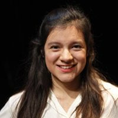
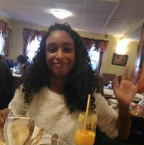
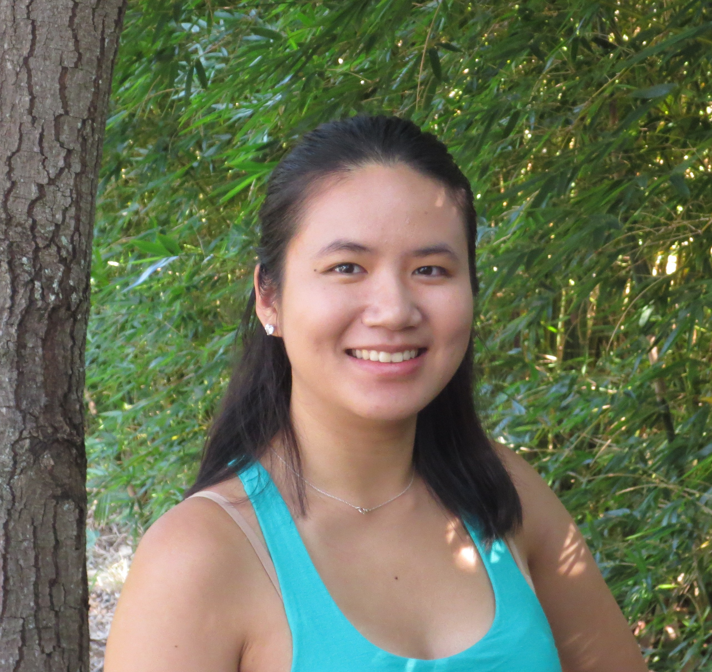

Team DDR (Deutsche Demokratische Republik)
Meet the stars of Olin's 2016 Fall Principles of Engineering course - Team DDR!
Casey Alvarado
Casey Alvarado is a senior studying Electrical and Computer Engineering. She was the team's electrical lead and now has a burning hatred for LEDs.
Nora Mohamed
Nora Mohamed is a junior studying Engineering with a concentration in Computing. She decided it was time to get a degree in Mechanical Engineering and became the team's mechanical lead. She also designed this website and made a bunch of graphics! Her favorite DDR game is DDR Max 2.
Cynthia Chen
Cynthia Chen is a senior studying Electrical and Computer Engineering. She was the team's software lead and spent most meetings dancing. She is the creator of our web game!
Bill Du

Bill Du is an undergraduate student studying Engineering with a concentration in Computing at Olin College.